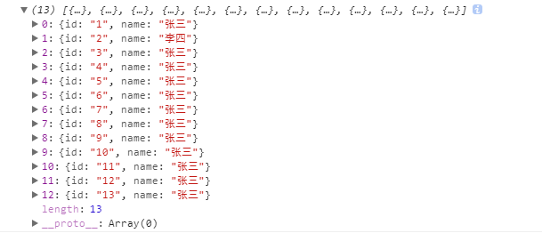
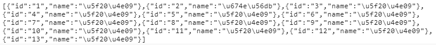

前提：通过jquery向服务器提交AJAX申请
结果：获取服务器返回值，并在JS内调用
index.js
function test(){
var url="http://www.test.com/22.php";
var dt={"id":123};
$.post(url,dt,function(data){
console.log(data);
var dt=JSON.stringify(data);
console.log(dt[0]);
},'json'); //默认设置从服务器返回的值为JSON对象，在JS里可以直接通过调用JSON对象的方式调用值
}
22.php
<?php
require "dbcon.php";
// echo 222;
$id=$_POST["id"];
// $id=$_GET["id"];
// echo $id;
$str="SELECT id,name FROM user";
// print_r($str);
$res=mysqli_query($conn,$str);
$arr=array();
while($row=mysqli_fetch_array($res,MYSQLI_ASSOC)){
array_push($arr,$row);
}
$brr=json_encode($arr);
echo $brr;
浏览器调试显示：
返回值为JSON对象

返回值为文本，即JSON文本字符串

若要将JSON文本字符串转JSON对象，需用
var dt=JSON.parse(data);
源码：
index.js
$(function(){
$.ajaxSettings.async = false;
var n=test();
});
function test(){
var url="http://www.test.com/22.php";
var dt={"id":123};
$.post(url,dt,function(data){
console.log(data);
var dt=JSON.stringify(data);
console.log(dt[0]);
},'json');
}
22.php
<?php
require "dbcon.php";
$id=$_POST["id"];
$str="SELECT id,name FROM user";
$res=mysqli_query($conn,$str);
$arr=array();
while($row=mysqli_fetch_array($res,MYSQLI_ASSOC)){
array_push($arr,$row);
}
$brr=json_encode($arr);
echo $brr;
dbcon.php
<?php
define('DB_HOST','localhost');
define('DB_USER','root');
define('DB_PWD','root');
define('DB_db',"test");
$conn=mysqli_connect(DB_HOST,DB_USER,DB_PWD);
if(!$conn){
die("数据库连接错误".myqli_error());
}
else{
mysqli_select_db($conn,DB_db);
}